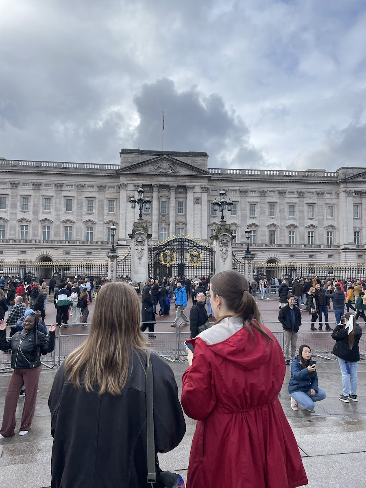
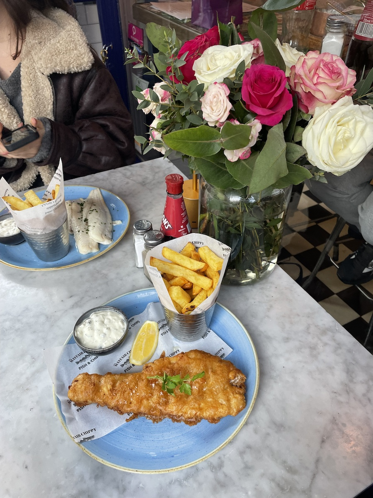

London, UK
What I did at home base for 5 months (and 1 week):

Horizontal scroll to view a few images from my trip!
February
Activities
Food

Horizontal scroll to view a few images from my trip!
March
Activities
Food

Horizontal scroll to view a few images from my trip!
April
Activities
Food

Horizontal scroll to view a few images from my trip!
May
Activities
Food
June
Activities
- Warren Street
- Benthal Green/Hackney
- Went to Nice, Monaco, Antibes, Cannes
- Went to Amsterdam!
- Went to Brussels and Brugge!
- Visited Birmingham!
- Prime Meridian in Greenwich
- Greenwich Market
- Went to Brighton!
- The Shard View
- Went to Kenya!
Food
Horizontal scroll to view a few images from my trip!
July
Activities
- Still in Kenya
- Wimbledon
- Showed the Fam around
- High Tea
- Abbey Road
- Neal's Yard